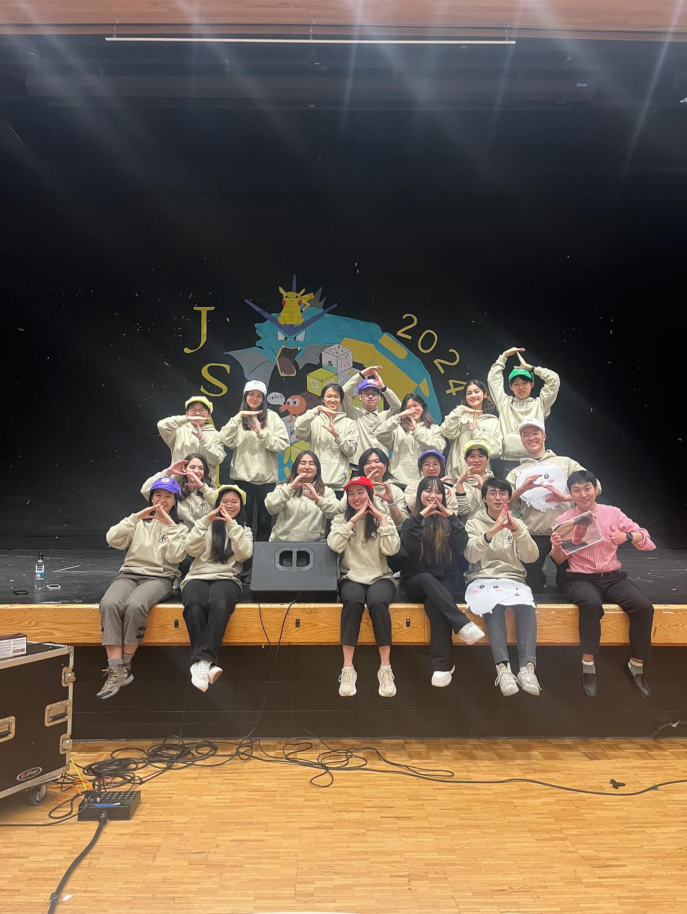
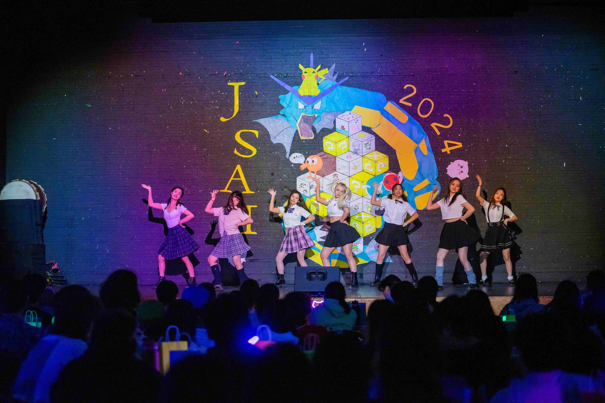
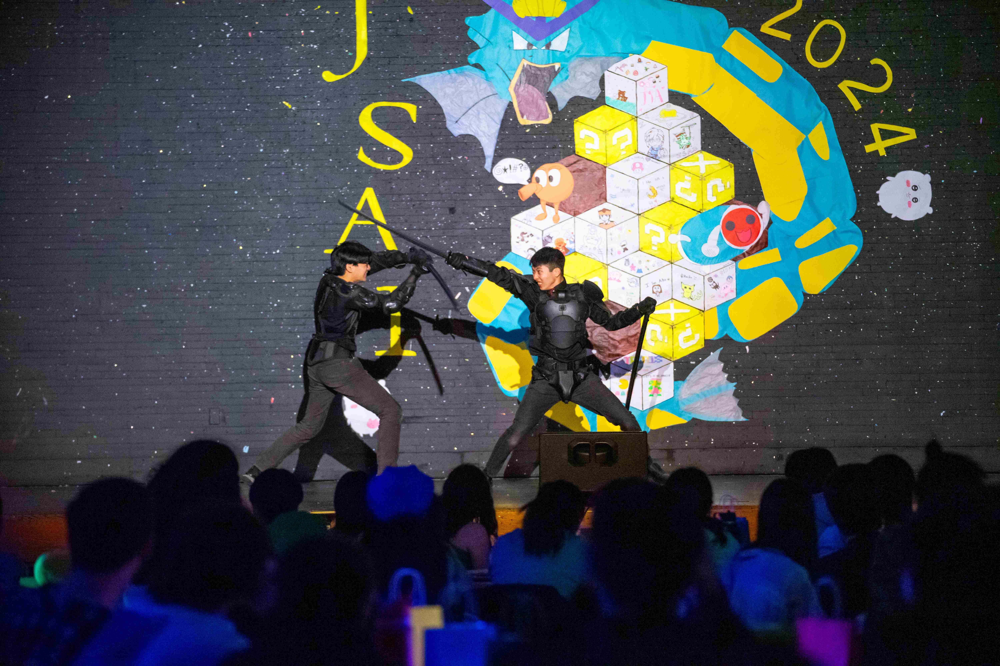
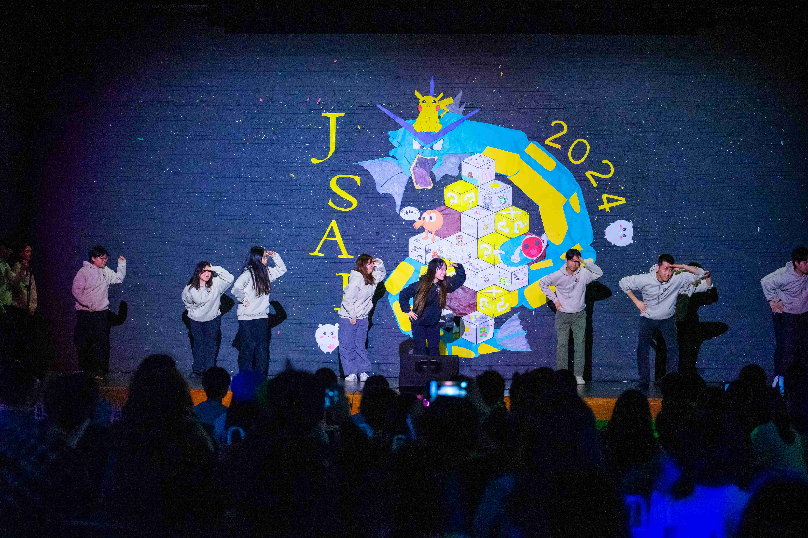
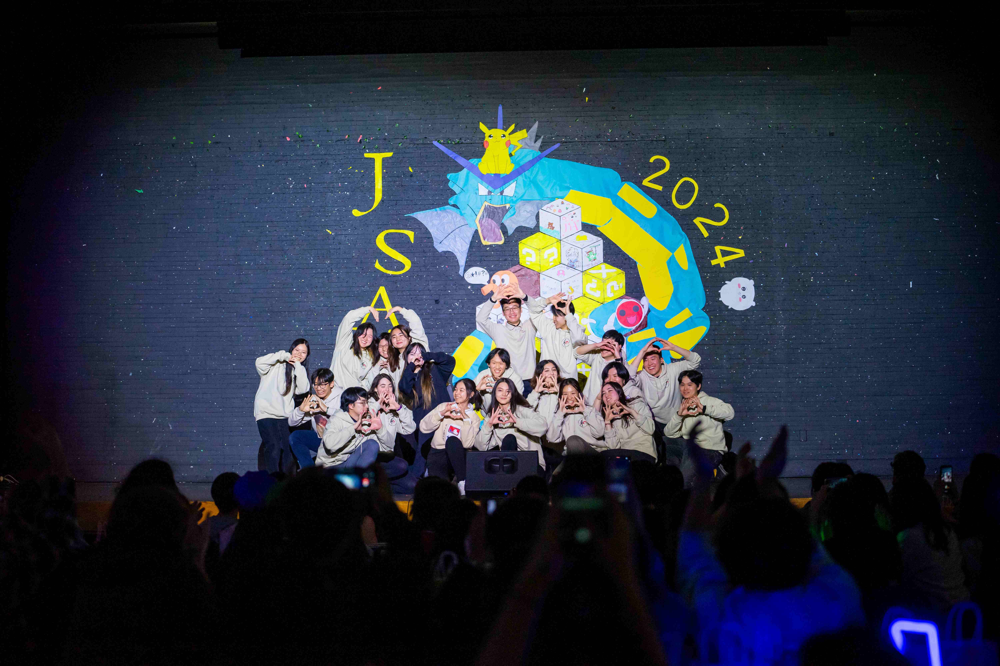
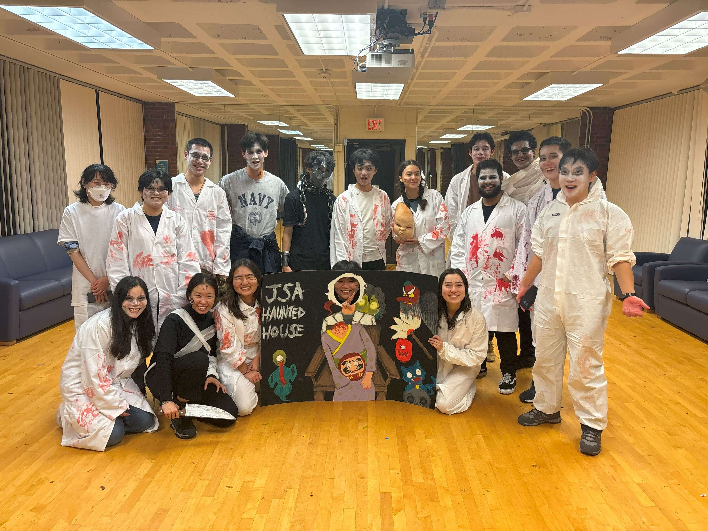
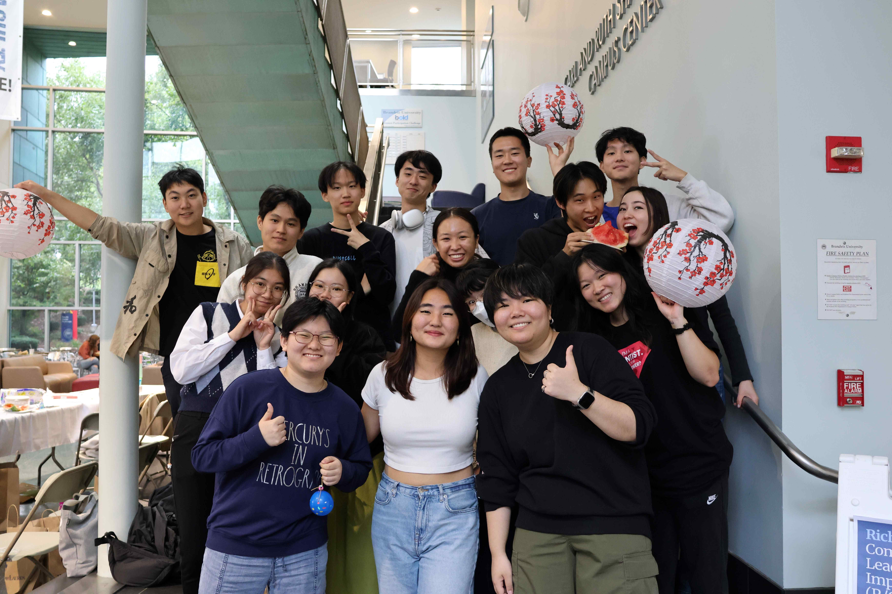
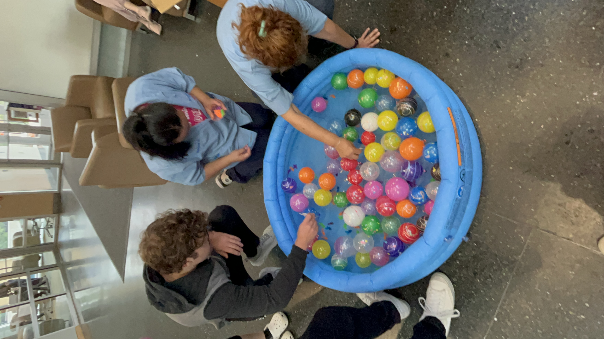
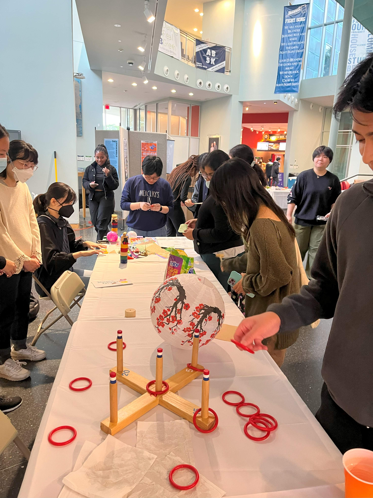

Table of Contents:
- 2024/04: Hosted JSAI (Japanese Studetn Association Annual Event)
- 2023/11: Hosted a Haunted House
- 2023/09: Hosted a Natsumatsuri Event (Japanese Summer Festival))
- 2023/09: Hosted the first Japanese Language Table Session
-
2024 Apr.
JSA annual event (JSAI festival)
Brandeis Unviersity
Waltham, Massachusetts
Facilitated JSAI, the largest annual event of the club as an event coordinator (at the time. Currently a Treasurer). The event gained over 450 participants which is a +30% increase compared with last year.
-

-

-
2023 Nov.
JSA Hautned hosue
Contains
fake blood
Click to revealBrandeis Unviersity
Waltham, Massachusetts
 Link to the promotional video
Link to the promotional video
Contains
fake blood
Click to revealOrganized a highly anticipated annual JSA summer event that provides a refreshing relief from a grueling heat on campus. Prepared +80 capacity, which was all reserved weeks before the event.
This event is hosted annually to reflect a common exhibition typically held at Japanese school festivals. -
2023 Sep.
JSA Natsumatsuri (Sumemr Festival) Event
Brandeis Unviersity
Waltham, Massachusetts
Hosted a Natsumatsuri event, an event commonly hosted in Japan to celebrate good harvest and appreciate their well-being.
Prepared traditional Japanese Natsumatsuri exhibition including "Yoyo Sukui (Yoyo Scooping)" and "Suikawari (Watermelong Splitting)" to fully immerse attendees with authentic Japanese summer festival.2023 Sep.
Japanese Language Table (First session)

Brandeis Unviersity
Waltham, Massachusetts
Hosted the first Japanese Language Table session, designed to enhance practical Japanese speaking skills through discussions with native speakers.
This program was created in response to feedback from a tutoring student who expressed a desire to improve their conversational Japanese before an upcoming study abroad session.
Along with my Japanese tutoring session on campus, this initiative has contributed to increasing students' grades in Japanese classes by up to 20%.
Collaborated with faculty members and financially sponsored from the Brandeis University Japanese Language Program.